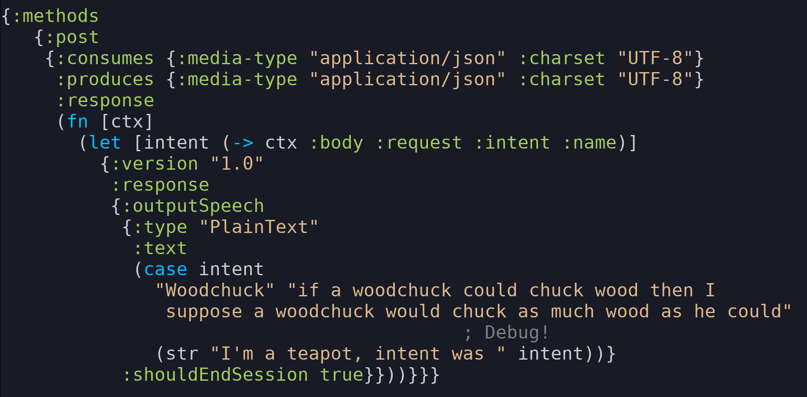

yada yada yada
Malcolm Sparks
Created: 2016-12-10 Sat 08:40
The printing press: 1440
The Web: 1990
- URIs - universal address system for information
- HTTP - universal information retrieval system
- HTML - retrieval and navigation for humans
HTTP: the choice of a new generation
Web frameworks
- Still far too complex!
- So much for the developer to do
- RFC 7230, 7231, 7232, 7233, 7234, 7235…
- Ambivalent about standards
- We need a better way!
WebMachine - a way forward

yada
yada is declarative
(yada/resource
{:methods
{:get
{:produces "text/html"
:response
(fn [_] "Hello World!
")}
:put
{:consumes "application/json"
:parameters {:body {:greeting String}}
:response (fn [ctx] ...)}}})
yada is standards-compliant
- Response status codes and headers
- Content negotiation
- Conditional requests
- Security
- Much more, and more to come
yada is linear
available? → known-method? → uri-too-long? → TRACE → method-allowed? → parse-parameters → capture-proxy-headers → authenticate → get-properties → authorize → process-content-encoding → process-request-body → check-modification-time → select-representation → if-match → if-none-match → invoke-method → get-new-properties → compute-etag → access-control-headers → security-headers → create-response → logging → return
- State monad (state is known as request context)
- By default, all requests for all routes go through the same chain
- Every interceptor has access to request, whole resource model and any information collected by previous interceptors
Interceptor
(defn known-method?
[ctx]
(if-not (:method-wrapper ctx)
(d/error-deferred
(ex-info ""
{:status 501
::method (:method ctx)}))
ctx))
yada is asynchronous
available? → known-method? → uri-too-long? → TRACE → method-allowed? → parse-parameters → capture-proxy-headers → authenticate → get-properties → authorize → process-content-encoding → process-request-body → check-modification-time → select-representation → if-match → if-none-match → invoke-method → get-new-properties → compute-etag → access-control-headers → security-headers → create-response → logging → return
- Any interceptor can defer its return value (futures, promises, core.async channels)
yada is extensible
- Methods
- Media-types
- Interceptors
Adding methods
(extend-protocol Method
BrewMethod
(keyword-binding [_] :brew)
(safe? [_] false)
(idempotent? [_] false)
(request [_ ctx]
;; Method semantics here
))
Adding media-types
(defmethod parse-stream
"application/transit+msgpack"
[_ stream]
(-> (bs/to-input-stream stream)
(transit/reader :msgpack)
(transit/read)
(with-400-maybe)))
yada is scaleable
- Built upon aleph and netty
Content Negotiation
available? → known-method? → uri-too-long? → TRACE → method-allowed? → parse-parameters → capture-proxy-headers → authenticate → get-properties → authorize → process-content-encoding → process-request-body → check-modification-time → select-representation → if-match → if-none-match → invoke-method → get-new-properties → compute-etag → access-control-headers → security-headers → create-response → logging → return
'Data Macros'
{:produces "text/html"}
becomes
{:produces
[{:media-type "text/html"}]}
but you can do
{:produces
[{:media-type "text/html"
:charset "UTF-8"
:language #{"en" "zh-ch;q=0.9"}}
{:media-type "text/html"
:charset "Shift_JIS"
:encoding "gzip"
:language "zh-ch;q=0.9"}
{:media-type "text/plain"}]}
Parameter validation
available? → known-method? → uri-too-long? → TRACE → method-allowed? → parse-parameters → capture-proxy-headers → authenticate → get-properties → authorize → process-content-encoding → process-request-body → check-modification-time → select-representation → if-match → if-none-match → invoke-method → get-new-properties → compute-etag → access-control-headers → security-headers → create-response → logging → return
- Attempt to coerce parameters to required types
- If parameters aren't valid, return with a 400
Parameters
(yada/resource
{:methods
{:get
{:parameters
{:query {:foo s/Inst}
:body {:request {:intent {:name s/Str}}}}}}})
Conditional Requests
available? → known-method? → uri-too-long? → TRACE → method-allowed? → parse-parameters → capture-proxy-headers → authenticate → get-properties → authorize → process-content-encoding → process-request-body → check-modification-time → select-representation → if-match → if-none-match → invoke-method → get-new-properties → compute-etag → access-control-headers → security-headers → create-response → logging → return
Properties
(extend-protocol yada.resource/ResourceCoercion
String
(as-resource [s]
(resource
{:properties {:last-modified (to-date (now))
:version s}
:methods
{:get
{:produces
[{:media-type "text/plain"
:charset charset/platform-charsets}]
:response (fn [ctx] s)}}})))
Security
available? → known-method? → uri-too-long? → TRACE → method-allowed? → parse-parameters → capture-proxy-headers → authenticate → get-properties → authorize → process-content-encoding → process-request-body → check-modification-time → select-representation → if-match → if-none-match → invoke-method → get-new-properties → compute-etag → access-control-headers → security-headers → create-response → logging → return
Security
(yada/resource
{:id ::basic-example
:access-control
{:scheme "Basic"
:verify
(fn [[user password]]
(when (= [user password]
["scott" "tiger"])
{:user "scott"
:roles #{"secret/view"}}))
:authorization
{:methods
{:get "secret/view"}}}})
Server sent events
(yada/resource
{:methods
{:get {:produces "text/event-stream"
:response (chan)}}})
Uploads
available? → known-method? → uri-too-long? → TRACE → method-allowed? → parse-parameters → capture-proxy-headers → authenticate → get-properties → authorize → process-content-encoding → process-request-body → check-modification-time → select-representation → if-match → if-none-match → invoke-method → get-new-properties → compute-etag → access-control-headers → security-headers → create-response → logging → return
- Fully asynchronous
- Support for form-data/multipart (~200Mb/s)
- Boyer-Moore-Horspool algorithm (modified for streaming)
- Pluggable handlers
Error handling
- Separate (pluggable) error interceptor chain
Status responses
(yada/resource
{:methods
{:get
{:response (fn [ctx] nil)}}
:responses
{404 {:response "Not found"}}})
Routing
- Not supported!
Routes and Resources should be independent – Phillip Meier
bidi
- A URI router, nothing more
- Recursive pattern matching
- Bidirectional
bidi example
["/phonebook" [
["" :index]
[["/" :id] :entry]
]]
/phonebook -> :index
/phonebook/123 -> :entry
:index -> /phonebook
:entry 123 -> /phonebook/123
yada is evolving
- clojure.spec
- Instrumentation and debugging
- Environment profiles
- Range requests & partial content
- Rate limiting
- WebDAV
- TLS and HTTP/2 (server push)
- ClojureScript?
Programming the Amazon Echo

Getting started with bidi and yada
- Documentation: https://juxt.pro/yada
- Sample application: https://github.com/juxt/edge